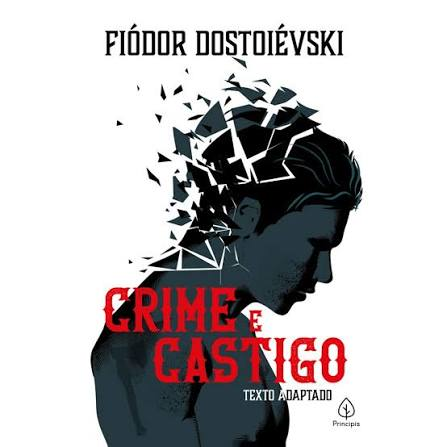

Crime e castigo
Sinopse
"Crime e Castigo", de Fiódor Dostoiévski, acompanha o ex-estudante Rodion Raskólnikov em
São Petersburgo. Consumido pela miséria e por uma teoria de que homens extraordinários estariam
acima da moral comum, ele assassina uma velha agiota para testar seus limites e aliviar suas
dívidas.
Contudo, o protagonista é imediatamente tomado por uma culpa lancinante, febre e paranoia, agravadas
pelos interrogatórios psicológicos do investigador Porfíri Petróvitch. Em meio ao abismo da loucura,
o apoio inabalável de Sônia Marmeládova o conduz à confissão e ao envio para trabalhos forçados na
Sibéria, onde ele finalmente inicia sua dolorosa jornada de redenção espiritual.